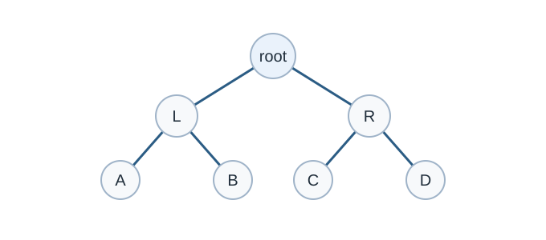

Binary Tree
คำอธิบาย
tree เป็นโครงสร้างข้อมูลแบบมีชนชั้น ซึ่งแตกต่างจาก array, linked list, stack และ queue ที่เป็นโครงสร้างเชิงเส้น
ตัวอย่าง tree เบื้องต้นคือ binary tree โดยแต่ละ node สามารถมีลูกได้มากที่สุดไม่เกิน 2 ลูก ดังรูป
ซึ่งเราสามารถเรียกลูกว่า left และ right child ได้

Binary tree. Original diagram for this guide.
คำศัพท์
node ด้านบนสุดจะถูกเรียกว่า root
ลูกด้านล่างที่อยู่ติดกับ node โดยตรงจะเรียกว่า children
node ด้านบนจะเรียกว่า parent
เช่น
aเป็น child ของfและfเป็น parent ของaและ node ที่ไม่มีลูกเลยจะเรียกว่า leaves
tree
----
j <-- root
/ \
f k
/ \ \
a h z <-- leavesเมื่อไรถึงใช้ tree?
หากต้องการเก็บข้อมูลที่มีลำดับขั้น เช่น ระบบไฟล์ในคอมพิวเตอร์
file system
-----------
/ <-- root
/ \
... home
/ \
ugrad course
/ / | \
... cs101 cs112 cs113
tree (ประกอบกับ ordering บางอย่าง e.g., BST) สามารถเข้าถึงข้อมูลได้เร็วกว่า linear data structure
tree สามารถเพิ่มลบข้อมูลได้สะดวกกว่าในบางกรณี
tree สามารถ implement ในรูปแบบคล้ายกับ linked list ได้
Binary Tree
คือ tree ที่แต่ละ node มีลูกไม่เกินสองลูก คือ left และ right
ตัวอย่าง
Binary Tree node มีส่วนประกอบต่อไปนี้
ข้อมูล
Pointer to left child
Pointer to right child
#include <bits/stdc++.h>
using namespace std;
struct Node {
int data;
struct Node *left;
struct Node *right;
// val is the key or the value that
// has to be added to the data part
Node(int val) {
data = val;
// Left and right child for node
// will be initialized to null
left = NULL;
right = NULL;
}
};
int main() {
/*create root*/
struct Node *root = new Node(1);
/* following is the tree after above statement
1
/ \
NULL NULL
*/
root->left = new Node(2);
root->right = new Node(3);
/* 2 and 3 become left and right children of 1
1
/ \\
2 3
/ \\ / \\
NULL NULL NULL NULL
*/
root->left->left = new Node(4);
/* 4 becomes left child of 2
1
/ \\
2 3
/ \\ / \\
4 NULL NULL NULL
/ \\
NULL NULL
*/
return 0;
}ใช้ array ในการสร้าง binary tree
ขนาดเรารู้ขนาดของ binary tree แล้วเราสามารถใช้ array ได้
Consider node
A[i]hasA[i*2]as left childA[i*2+1]as right child
โจทย์ฝึกฝน (Practice Problems)
ลองทำโจทย์เหล่านี้จาก CSES Problem Set เพื่อฝึกใช้ทักษะจากบทนี้ โดยเริ่มจากโจทย์ที่ง่ายที่สุดก่อน
โจทย์เพิ่มเติม: CSES Problem Set และ programming.in.th